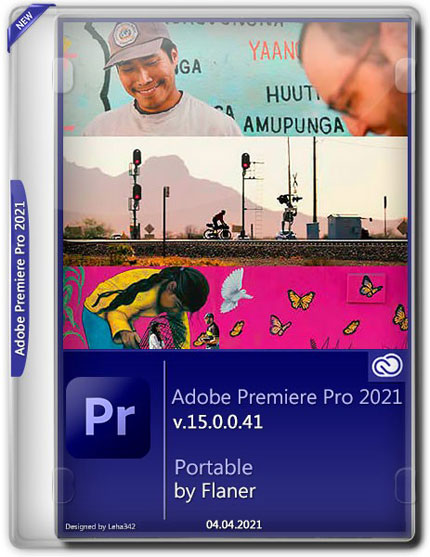

უდავო ლიდერი გრაფიკულ რედაქტორებს შორის, თავისი ფართო
შესაძლებლობებით,
მაღალი ეფექტიურობით და სისწრაფით.
პროგრამა გაძლევთ ყველა საშუალებას სურათის კორექქციისთვის,
მონტაჟისთვის, მომზადებისთვის დასაბეჭდად და მაღალხარისხიანი
სურათის გამოყვანისთვის. Photoshop არის პროფესიონალური გრაფიკული
რედაქტორი, რომელიც ამავე დროს ადვილია ასათვისებლად. მეორე არანაკლებ
ფართო გამოყენების სფერო არის Web-დიზაინი და ელექტრონული პუბლიკაციები.
პროგრამის ბოლო ვერსიაში ბევრი ახალი ფუნქციაა ზუსტად Web-დიზაინთან დაკავშირებით.
შეიძლება ითქვას რომ Photoshop კომპიუტერისთვის ერთ-ერთ აუცილებელ პროგრამად ითვლება.
პროგრამის ახალი ვერსია კი გამდიდრებულია ბევრი ახალი და სასარგებლო ფუნქციებით.
Windows 7 Ultimate
მოცემული კრებულები შექმნილია Windows 7 x86 და x64 ბიტიანი ვერსიის ორიგინალი
დისკის საფუძველზე, რომელშიც ინტეგრირებულია ყველა განახლება 2013 წლის 22
ნოემბრის ჩათვლით. დაინსტალირებულია Internet Explorer 11, დამატებულია
დრაივერები Network, WLAN და USB3-ის მხარდაჭერა. დანარჩენი ყველაფერი ისეა, როგორც
ორიგინალ დისკებში. დასაყენებელი ვერსიის არჩევა შესაძლებელია ოპერაციული სისტემის
ინსტალაციამდე (გააქტიურებული ან გასააქტიურებელი). რუსული, გერმანული და უკრაინული ენის
პაკეტები მოყვება არქივში.
Adobe Premiere Pro 2021

ეს არის პროგრამა სპეცეფექტების შესაქმნელად,
რომელიც მთლიანად ეწყობა Adobe Photoshop CS6
და საშუალებას მოგცემთ გამოიყენოთ ხელსაწყოების დიდი კრებული.
ერთერთი ახლა ხელსაწყო Shape Layers - გამოდგება ხატვისათვის,
ანიმაციური შტრიხების დამატებით ვექტორული ანიმაციების, გრედიენტების,
ვექტორული ეფექტების და შეყრის შესაქმნელად. ხელსაწყო Puppet Tool -
დაგეხმარებათ ანიმაციის შექმნაში და საშუალებას მოგცემთ გაწელოთ ეს ანიმაცია
ნებისმიერი მიმართულებით.